TP05: Real-Time Data Streaming and Processing Using Apache Kafka
A smart-campus system produces temperature and humidity readings continuously. Storing them only in files delays analysis and prevents several applications from reading the same events. In this lab, simulated sensors publish JSON events to a Kafka topic, and a Python consumer reads the stream in real time and raises an alert when the temperature reaches 35°C or more. The data is synthetic.
producer.py → Kafka broker (Docker, localhost:9092) → consumer.py
(sensor sim.) topic: campus-sensors (3 partitions) (parses JSON, ALERT if T ≥ 35°C)
├ Partition 0
├ Partition 1
└ Partition 2
Setup
Kafka 3.9.1 runs in KRaft mode (broker and controller in one node) from compose.yaml. The Python client is kafka-python inside a virtual environment.
docker compose up -d python -m venv .venv .venv\Scripts\Activate.ps1 python -m pip install -r requirements.txt docker exec -it tp05-kafka /opt/kafka/bin/kafka-topics.sh --bootstrap-server localhost:9092 --create --if-not-exists --topic campus-sensors --partitions 3 --replication-factor 1
Evidence
Running container
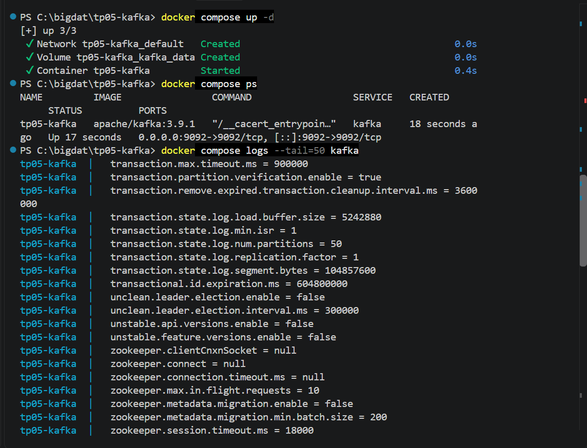
Topic description
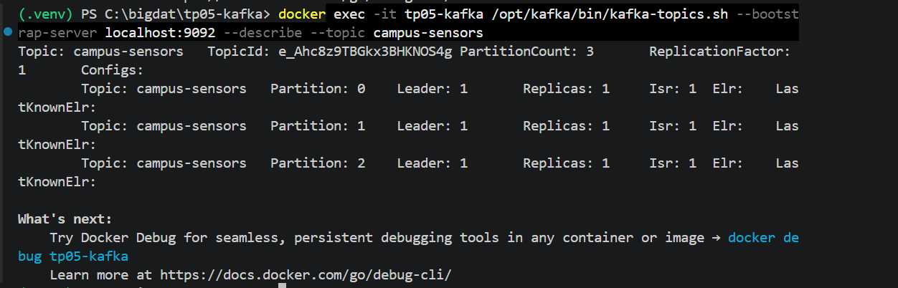
Producer and consumer output
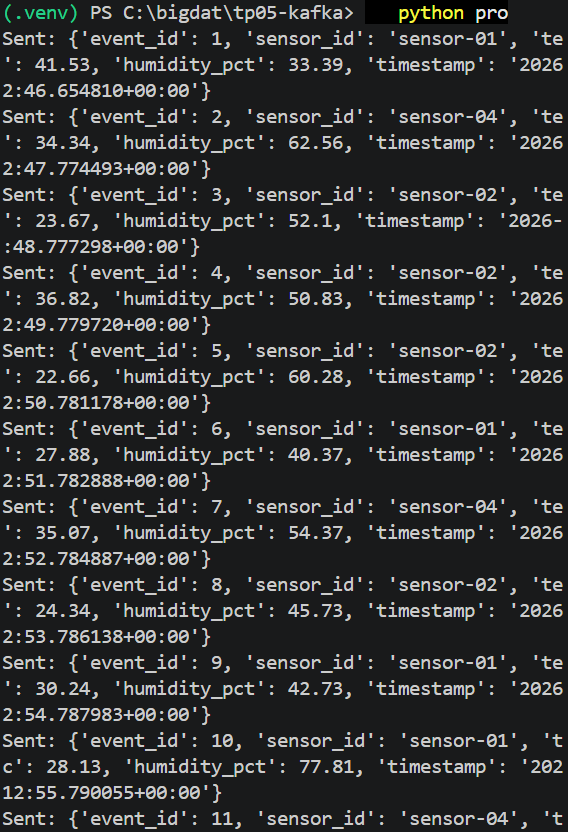
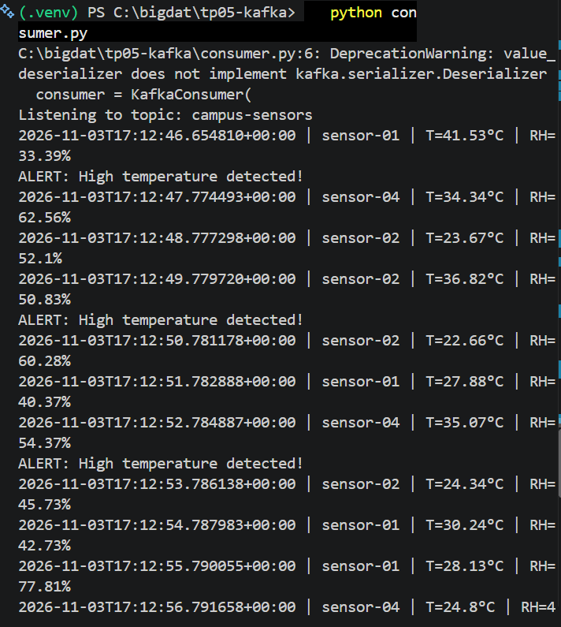
Consumer group offsets
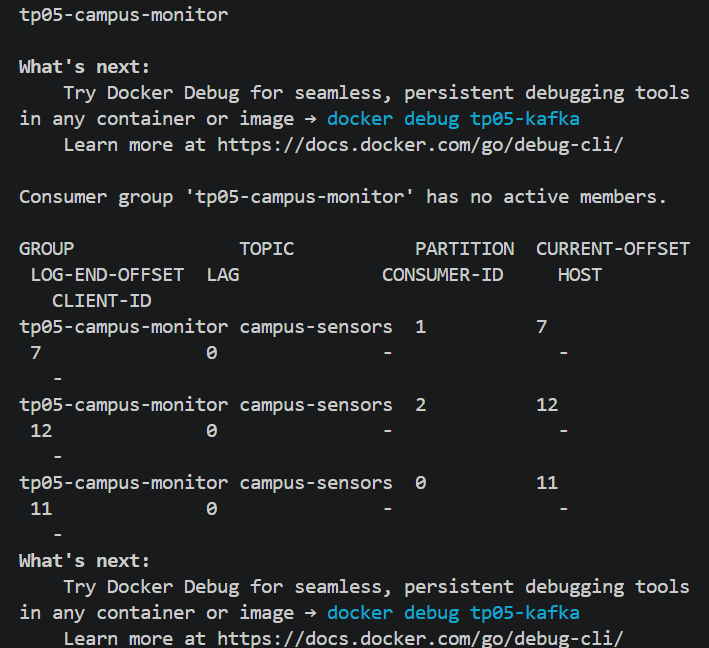
Further investigation
Different group_id
A second consumer with group_id="tp05-group-b" replayed the stored events immediately, because a new group has no committed offsets and auto_offset_reset="earliest" applies. The original group printed nothing when restarted. Group B later showed a lag of 30 while the original group showed lag 0, so each group tracks its own progress over the same data.
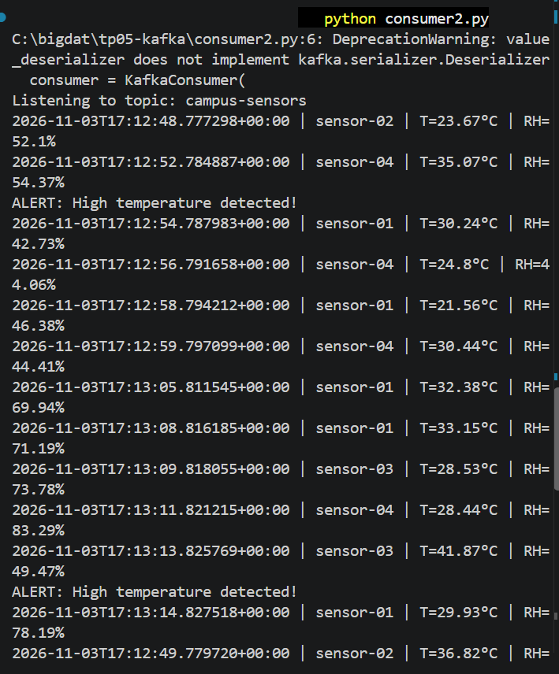
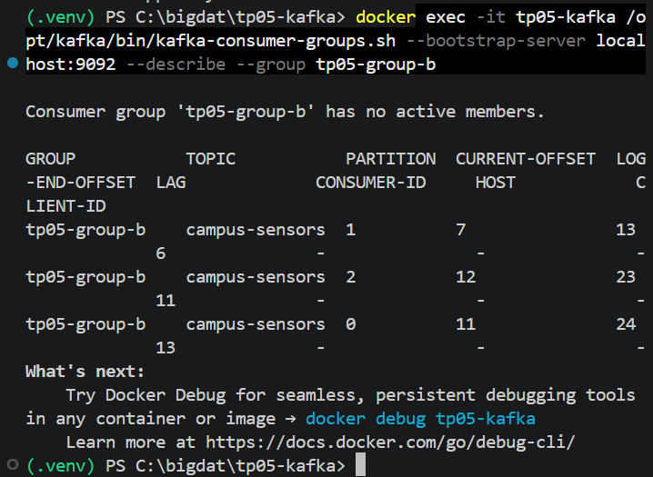
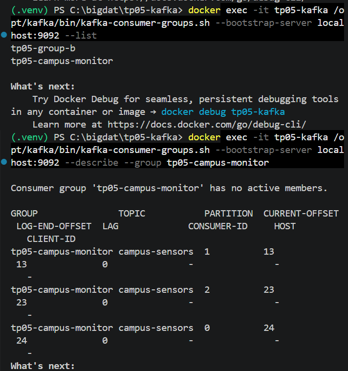
Two consumers in the same group
Kafka split the three partitions: one consumer owned partitions 0 and 1, the other owned partition 2. Each event appeared in only one terminal.
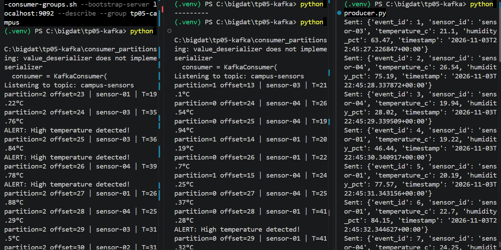
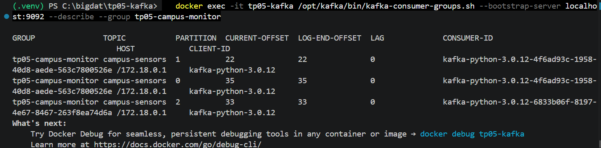
One partition versus three
A topic campus-sensors-1p with one partition was read by two consumers of the same group. Only one received events (all partition=0, offsets 0 to 29 in order) and the other stayed silent, because a partition can belong to only one consumer of a group.
| 1 partition | 3 partitions | |
|---|---|---|
| Ordering | Total order in the topic | Order only within each partition |
| Parallelism in one group | At most 1 active consumer | Up to 3 active consumers |
| Distribution | All events in partition 0 | Spread over partitions 0, 1, 2 |
What does not change on one broker: the single broker leads every partition, replication factor stays 1 (no fault tolerance), and throughput is still limited to one machine.
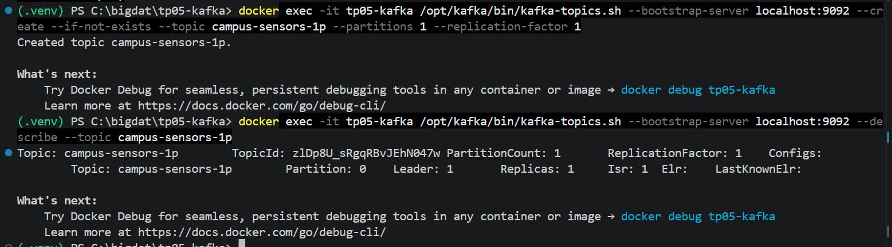
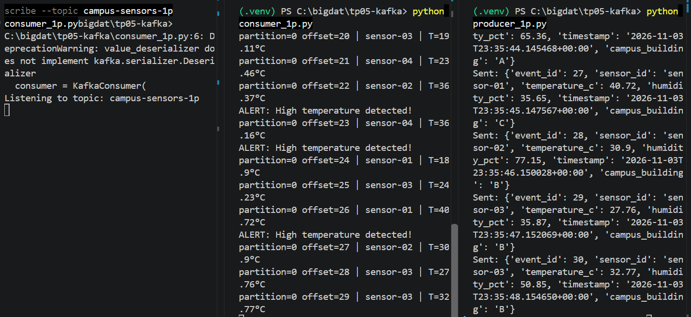
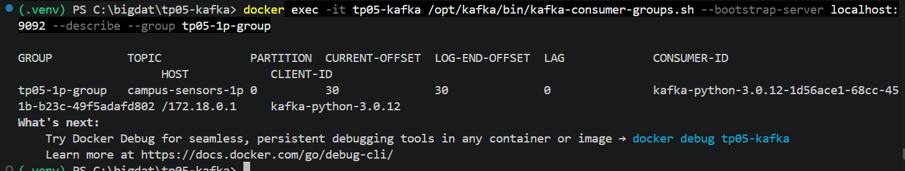
Running average
The consumer keeps only a total and a count, so it uses constant memory on an endless stream. After 90 events the average was 29.86°C, close to the theoretical mean of 30°C for temperatures uniform between 18 and 42.
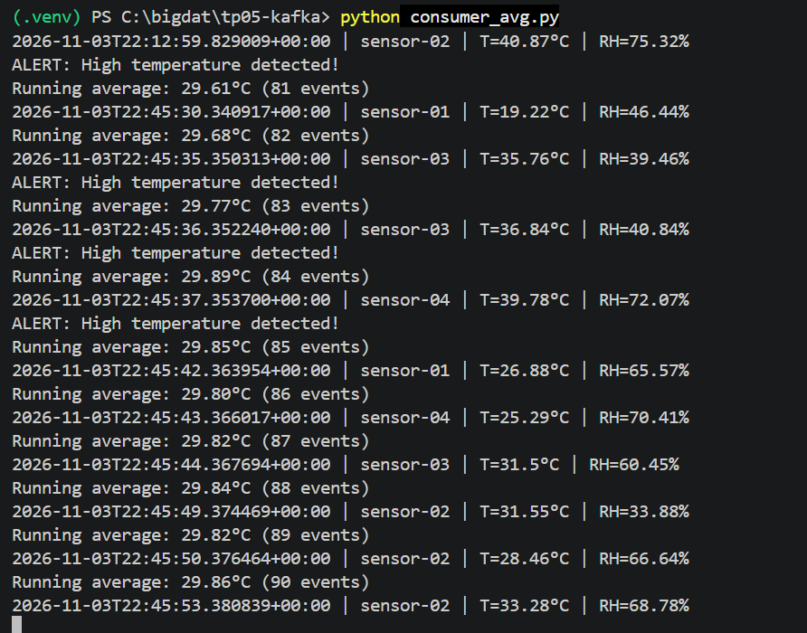
campus_building field and filter
Each event now has a campus_building field (A, B or C), and the consumer prints only building A. The filtering happens in the consumer: Kafka still delivers every event. Old events without the field are skipped with event.get().
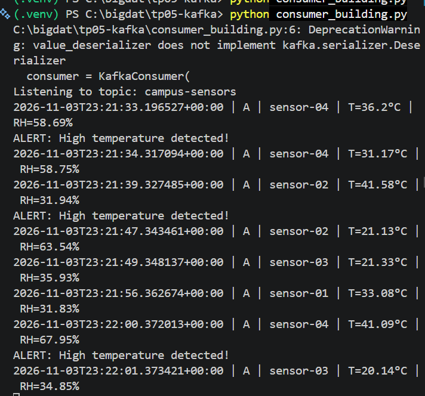
100 events
The behavior is the same as with 30 events, only the run is longer. At the end the group had lag 0 and offsets 84 + 82 + 84 = 250, which matches all the events sent during the lab.
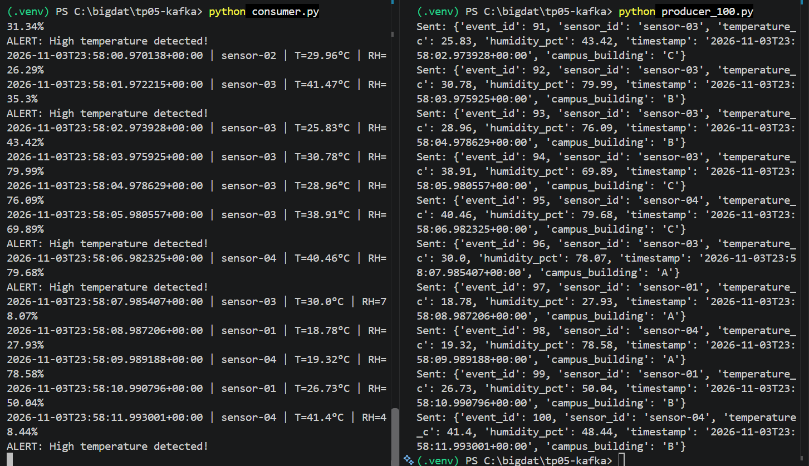
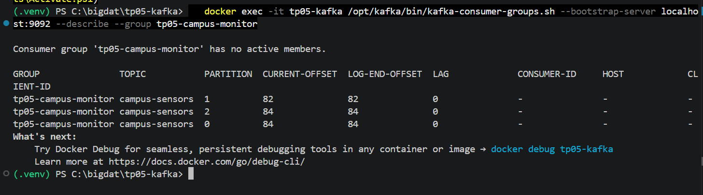
Answers to the report questions
- 1. What problem does Kafka solve?
- It decouples the systems that produce data from those that use it. Producers publish events without knowing the readers, several applications read the same events at their own pace, events are kept for a retention period (7 days by default), and consumers can replay them. This replaces static files and direct connections between services.
- 2. Definitions
- Producer: publishes events. Consumer: reads events. Broker: Kafka server that stores partitions and serves clients. Topic: named category of events. Partition: ordered, append-only log that is part of a topic. Offset: position number of an event in a partition. Consumer group: consumers sharing the reading of a topic, each partition going to at most one member at a time.
- 3. Topic versus partition
- A topic is the logical stream. A partition is a physical, ordered part of it with its own offsets. Order is guaranteed only inside a partition. Here, the 30 events were split as 11, 7 and 12 across three partitions.
- 4. Why
auto_offset_reset='earliest', and when does it apply? - It makes a consumer start from the beginning of the partition when its group has no valid committed offset, so it does not miss events already stored. Once the group has committed offsets, the setting is ignored and the consumer resumes where it stopped. In the lab, the new group replayed old events and the existing group did not.
- 5. Purpose of the group ID, and a new one
- The group ID identifies the group whose offsets Kafka stores, and defines who shares the partitions. Same ID: events are shared between consumers. Different ID: each group receives all events. A new ID has no offsets, so with
earliestit reads the topic from the start. - 6. Why JSON, and one limitation
- JSON is readable, language-independent and easy to parse in Python, with no schema setup. Its limitation is that no schema or types are enforced, so a changed or missing field can break consumers silently (old events lacked
campus_building). It is also larger and slower than Avro or Protobuf. - 7. Docker Compose versus manual start
- One declarative file holds the image version, ports, environment, volume and restart policy, and one command starts or removes everything. It avoids long
docker runcommands, can be versioned in Git, and gives the same environment on every machine without installing Java or Kafka. - 8. Limits of the single-broker setup
- No fault tolerance (replication factor 1), no high availability or controller redundancy, throughput and storage limited to one machine, no security (PLAINTEXT, no authentication or TLS), and an advertised listener that works only on the local machine. Replication is also not a backup.
- 9. Evidence
- See the running container, topic description, producer output and consumer output in the Evidence section.
Problems and solutions
| Problem | Cause | Solution |
|---|---|---|
| Cannot connect to the Docker API | Docker Desktop was not running | Started Docker Desktop and waited for the engine |
| Timeout reaching registry-1.docker.io | Temporary network problem | Ran docker pull apache/kafka:3.9.1 until it finished |
No module named 'kafka.vendor.six.moves' | kafka-python 2.0.2 does not work on Python 3.12.10 | Upgraded to kafka-python==3.0.12 |
DeprecationWarning on value_deserializer | kafka-python 3.x prefers a serializer class | Harmless, plain functions still work |
| Restarted consumer printed nothing | The group had already committed its offsets | Expected: it prints when new events arrive, and a new group_id replays |
| Lost indentation and typos in the PDF | Copy from PDF | Rewrote the files by hand, topic name campus-sensors |
Cleanup
docker compose down # keeps the data volume docker compose down -v # also deletes the stored messages